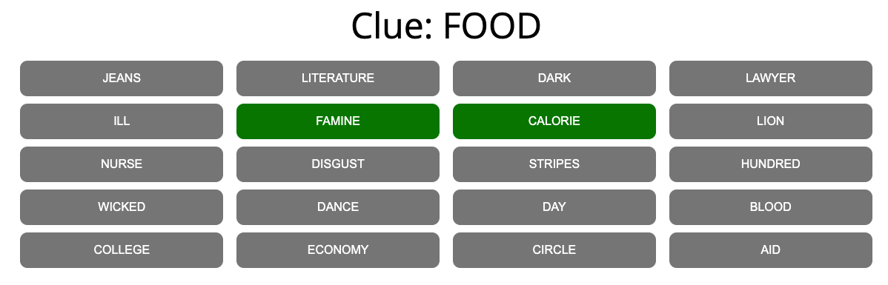

<!DOCTYPE html>
<html>
    <head>
        <title> Connector Experiment </title>
        <script src="jspsych/jspsych.js"></script>
        <link href="jspsych/jspsych.css" rel="stylesheet" type="text/css" />
        <script src="jspsych/plugin-connector.js"></script>
        <script src="stimuli.js"></script>
        <script src="https://unpkg.com/@jspsych/plugin-html-keyboard-response@1.1.2"></script>
        <style>
            .connector-button{
                background-color: gray;
                border: none;
                border-radius: 10px;
                color: white;
                padding: 15px 32px;
                text-align: center;
                text-decoration: none;
                display: inline-block;
                font-size: 16px;
                margin: 5px 0.5%;
                cursor: pointer;
                width: 15%;
            }
            .filler{
                background-color: white;
                border: none;
                border-radius: 10px;
                color: white;
                padding: 15px 32px;
                text-align: center;
                text-decoration: none;
                display: inline-block;
                font-size: 16px;
                margin: 5px 0.5%;
                cursor: default;
                width: 15%;
            }
            .disabled {
                opacity: 0.25;
                cursor: not-allowed;
            }
            .enabled {
                opacity: 1;
                cursor: pointer;
            }
            .selected {
                background-color: green;
            }
            .finish-button{
                background-color: blue;
                border: none;
                border-radius: 10px;
                color: white;
                padding: 15px 32px;
                text-align: center;
                text-decoration: none;
                display: inline-block;
                font-size: 16px;
                margin: 5px 1%;
                width: 15%;
            }
        </style>
    </head>
    <body></body>
    <script>
        var jsPsych = initJsPsych({
                on_finish: function() {
                    jsPsych.data.displayData();
                }
            });

        var trial = {
            type: jsPsychConnector,
            stimulus: jsPsych.timelineVariable("clue"),
            choices: jsPsych.timelineVariable("board"),
            prompt: "Please select two words from the board",
            num_buttons: 2,
            data: {
                words: jsPsych.timelineVariable("words"),
                clue: jsPsych.timelineVariable("clue"),
                board: jsPsych.timelineVariable("board"),
                pragmatics: jsPsych.timelineVariable("pragmatics"),
                accessibility: jsPsych.timelineVariable("accessibility")
            }
        }

        var practice = {
            type: jsPsychConnector,
            stimulus: jsPsych.timelineVariable("clue"),
            choices: jsPsych.timelineVariable("board"),
            prompt: "Please select two words from the board",
            num_buttons: 2,
            data: {
                words: jsPsych.timelineVariable("words"),
                clue: jsPsych.timelineVariable("clue"),
                board: jsPsych.timelineVariable("board"),
                pragmatics: jsPsych.timelineVariable("pragmatics"),
                accessibility: jsPsych.timelineVariable("accessibility")
            }
        }

        var fixation = {
            type: jsPsychHtmlKeyboardResponse,
            stimulus: "<p style='font-size: 48px;'>+</p>",
            choices: "NO_KEYS",
            trial_duration: 1000,
        }

        var instructions = {
            type: jsPsychHtmlKeyboardResponse,
            stimulus: "<p style='font-size: 24px;'> Welcome to the Connector experiment, and thank you for choosing to participate! <br> <br> Please read the following instructions so that you know how to play the game: <br> <br> You will be shown a board of 20 words, like the example below. In addition to the board, you will see a clue. You should think of this clue as coming from a friend or teammate, who is trying to indicate two of the words on the board without directly saying either of them. So, your goal is to interpret the clue and select the two words that you think are the most likely targets for that clue. <br> <br>  <br> <br> To familiarize you with the game, there are four practice trials. When you are ready, please press the space bar to begin these trials. <br> <br> There will be a pause between the practice trials and the experimental trials. </p>",
            choices: [" "],
        }

        var practice_procedure = {
            timeline: [fixation, practice],
            timeline_variables: stimuli,
            randomize_order: true
        }

        var move_to_experiment = {
            type: jsPsychHtmlKeyboardResponse,
            stimulus: "<p style='font-size: 24px;'>This concludes the practice trials. <br> When you are ready, please press the space bar, and the program will automatically move you through the 60 experimental trials.</p>",
            choices: [" "]
        }
        
        var experiment_procedure = {
            timeline: [fixation, trial],
            timeline_variables: stimuli,
            randomize_order: true
        }

        //run the code
        jsPsych.run([instructions, practice_procedure, move_to_experiment, experiment_procedure]);
    </script>
</html>